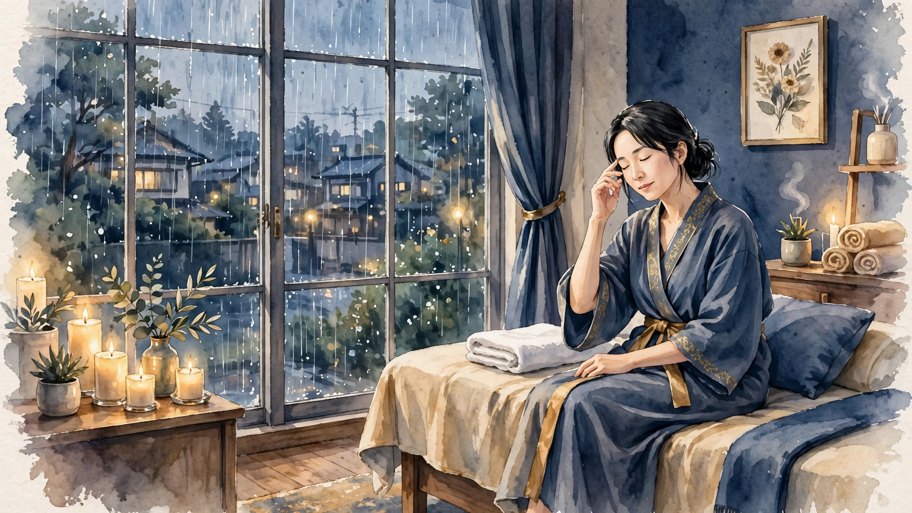

芦屋で雨の日に気になる目の疲れ感｜低気圧の日の過ごし方とセルフケア、受診の目安

「雨の日は朝から目が重くて、まぶたを開けているのが億劫になる」「低気圧の日は画面の文字がかすんで見えて、夕方には目の奥が重い」——そんな雨の日の目の疲れ感を感じる方はいませんか。晴れた日には気にならないのに、雨の日だけ目の重さが表れると、一日をどう過ごそうかと身構えてしまうものです。この記事では、雨の日・低気圧の日に感じやすい目の疲れ感の一般的な解説と、気圧の変化をはじめとする考えられる要因の整理、低気圧の日の過ごし方とセルフケア、受診の目安をまとめました。デスクワーク後の場面に絞った整理は、コラム「芦屋でデスクワーク後に気になる目の疲れ感｜要因の整理とセルフケア、受診の目安」でまとめていますので、この記事では「雨の日・低気圧」という場面に絞って見ていきます。
雨の日の目の疲れ感とは — 低気圧の日に表れやすい感覚
目の疲れ感は特定の病名ではなく、目が重い、乾く、かすむ、ピントが合いにくいといった、目のまわりに感じる疲れの感覚をまとめて表す日常的な言葉です。「眼精疲労」という言葉もよく使われ、一般には、目を休めても疲れ感が残りやすい状態を指して使われることがあります。その中でも、雨の日や低気圧が近づくタイミングに重なって表れるものは、天気の変化に体がついていこうとする過程と重なりやすいと言われています。感じ方には個人差がありますが、雨の日に「目が疲れる」と表現される感覚には、たとえば次のようなものがあります。
- 雨が降り出す前から、目の奥や眉間のあたりが重く感じる
- 画面や本の文字がかすんで見え、ピントが合いにくいと感じる
- 目が乾いたように感じ、まばたきの回数が増えたように感じる
- まぶたが重く、目を開けているのが億劫に感じる
- 頭の重さや首・肩の張りと一緒に、目の疲れ感も気になる
- 天気が回復すると、目の重さもいつの間にか意識しなくなることがある
雨が上がると自然と落ち着くことも多い一方、天気に関係なく続く場合や、少しずつ強くなる場合は、天気以外の背景を確認するきっかけにもなります。まずは、どんな天気の日に、どんな感じ方が、どのくらい続くのかを振り返ってみることが、自分のリズムを知る手がかりになります。頭の重さが中心に気になる方については、コラム「芦屋で雨の日に気になる頭の重さ｜低気圧の日の過ごし方とセルフケア、受診の目安」もあわせてご覧ください。
考えられる要因
雨の日に目の疲れ感が気になりやすくなる背景は、ひとつとは限らず、いくつかの要因が重なっている場合もあります。ここでは一般的に挙げられるものを整理しますが、特定の原因を断定するものではありません。
- 気圧の変化：低気圧が近づくと外からの気圧が下がり、体にかかる圧力のバランスが変わります。その変化を耳の奥（内耳）で感じ取り、体がバランスを取ろうとする過程が、目の奥の重さとして感じられる場合があるとされること
- 自律神経の切り替わりの負担：気圧や気温、湿度の変化が続く日は、活動と休息の切り替わりを担う自律神経の働きが忙しくなり、目の重さやぼんやり感につながって感じられる場合があるとされること
- 室内で過ごす時間と、近くを見る時間の長さ：雨の日は外出が減り、テレビやスマートフォン、読書など、近くの画面や文字を見続ける時間が長くなりやすいこと。また、画面に集中していると、まばたきの回数が減りやすいと言われていること
- 室内の明るさと空気の乾燥：どんよりした日は室内が暗くなりがちで、文字を読むときに目に力が入りやすいこと。除湿や冷暖房の効いた室内では空気が乾き、風が顔まわりに当たり続ける場合があること
- 睡眠の質：前夜の蒸し暑さや気圧の変化で眠りが浅くなり、朝からの目の重さにつながって感じられること
- 首・肩まわりのこわばりとの重なり：雨の日は濡れるのを避けて前かがみで歩いたり、室内で同じ姿勢が続いたりしやすく、首や肩の緊張が目の疲れ感と一緒に意識されやすいこと
- 眼鏡・コンタクトレンズの度数：度数が今の見え方に合っていない状態で、無理のある見え方のまま近くを見続ける負担が重なること
なかには、目の表面の乾燥（ドライアイ）や目の病気など、目の内側の要因が背景にある場合もあります。「低気圧のせいだろう」と決めつけず、見え方の変化や痛みをともなう場合や、長く続く場合は、自己判断で済まさず眼科などで確認することが大切です（受診の目安は後述します）。
セルフケア — 低気圧の日の過ごし方と、雨の日に取り入れやすい工夫
雨の日のセルフケアは、外出を前提としない、家の中でできる小さな工夫から始めるのが取り入れやすいものです。無理のない範囲で試しやすいものを挙げます。
- 画面から目を休ませる区切りをつくる：近くの画面を見続ける時間の合間に、窓の外の遠くの景色や雨の様子に視線を向ける時間をはさみます。作業や読書は、時間を決めて区切ることも一つの方法です。
- まばたきを意識する時間をつくる：集中すると減りやすいと言われるため、区切りのタイミングで、ゆっくりまばたきを繰り返すことを意識します。
- 目を閉じて温める時間を持つ：温めたタオルを目のまわりに当てて目を閉じるなど、画面から離れて目を休める時間を持ちます。タオルは熱すぎない温度にし、様子を見ながら行います。
- 室内の明るさを見直す：どんよりした日は早めに照明をつけ、手元で本を読むときは手元灯を使うなど、暗い中で目を凝らす時間を減らす工夫をします。
- 乾燥への工夫をする：除湿や冷暖房の風が顔に直接当たらないよう風向きを調整したり、加湿の工夫をしたりします。様子を見ながら行います。
- 耳まわり・首・肩を軽く動かす：耳を手のひらで包んで温める、首をゆっくり傾けたり回したりする、肩を上げ下げするといった小さな動きをはさみます。痛みを感じる動きは避け、心地よい範囲で行います。
- 予定を詰め込みすぎず、夜は早めに休む：雨の日は、できる範囲で休息寄りの計画に組み替える日があってもよいものです。就寝の目安時間を決めるなど、休息の時間そのものを生活の中に置く工夫をします。
- 天気と目の感覚を簡単に記録する：目の疲れ感を感じた日と天気、気圧の予報、画面を見た時間や睡眠の様子を手帳などに書き留めると、自分が気になりやすい条件が見えやすくなります。気圧の変化を知らせる天気予報サービスを目安にする方もいます。
大切なのは、一度に全部を変えようとしないことです。画面を見る時間に区切りをつける、目を閉じて温めるといった続けやすい工夫ひとつから試し、自分の生活に合うものを少しずつ残してみてください。
受診の目安
次のような場合は、眼科など医療機関への相談を検討してみてください。
- 目の疲れ感が天気に関係なく数週間以上続き、目を休めても気になり続けている
- 見え方に変化がある（急にぼやける、視野の一部が見えにくい、物が二重に見える、左右で見え方が違うなど）
- 目の痛みや強い充血がある、涙や目やにが増えている
- 光がまぶしく感じやすい、光のまわりに輪が見えるように感じる
- 頭痛や吐き気をともなっている
- 眼鏡やコンタクトレンズの度数が合っていないように感じる、作り替えてから時間が経っている
- コンタクトレンズの使用中に痛みや異物感がある（その場合は使用をやめ、早めの受診を検討してください）
こうした状態の背景には、目の疲れ感以外の要因が関係していることもあります。セルフケアは日常の工夫として位置づけ、気になる状態が続くときは眼科などで確認しておくと安心です。
ステラベガのご案内 — 雨の日の夕方に、目と体を休める時間を
ステラベガは、芦屋市内にある女性専用のプライベートサロンです。施術歴30年のセラピストが、オイルマッサージと美容整体を組み合わせた90分コース（10,000円・税込）をご提供しています。営業は月曜〜土曜の17:00〜22:00（日曜休み）、完全予約制で、詳しい住所はご予約確定後にご案内します。完全個室ですので、人目を気にせずゆっくりとお過ごしいただけます。雨の日は足元にお気をつけてお越しください。シャワー設備のご利用については、ご利用施設により異なります。ご希望の場合はご予約時にお問い合わせください。
当サロンの美容整体には、頭・首・肩まわりのヘッドケアを含む構成があります。施術ではカウンセリングでその日の体調や、雨の日に重なりやすい目の疲れ感や首・肩の張りをうかがいながら、圧の強さも都度調整します。精油は体調とお好みに合わせてブレンドします。施術後の過ごし方や、ご自宅で続けられるセルフケアについても、施術後にご説明します。当サロンのお悩み別ガイドでも、目の疲れや首・肩まわりに関するお悩みを取り上げています。なお、近日開院予定のため、ご予約の受付はまだ開始していません。受付開始はこのページでご案内します。料金や営業時間の詳細は料金・営業時間のページでご確認ください。
なお、当サロンの施術はリラクゼーションと美容を目的としたもので、医療行為ではありません。目の疲れ感に対する効果を保証するものでもありません。気になる症状がある場合は、まず医療機関へご相談ください。